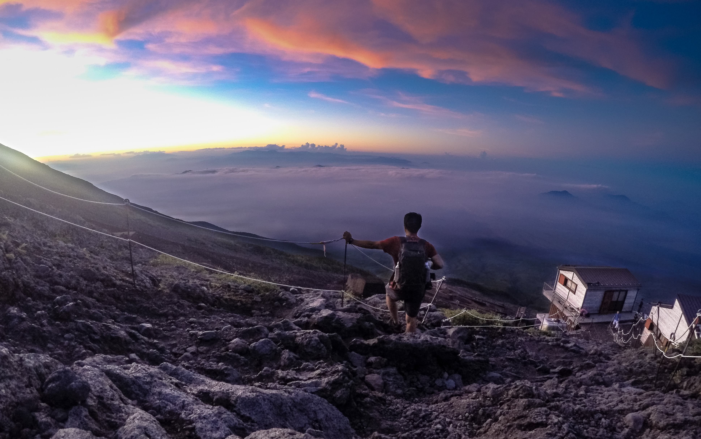
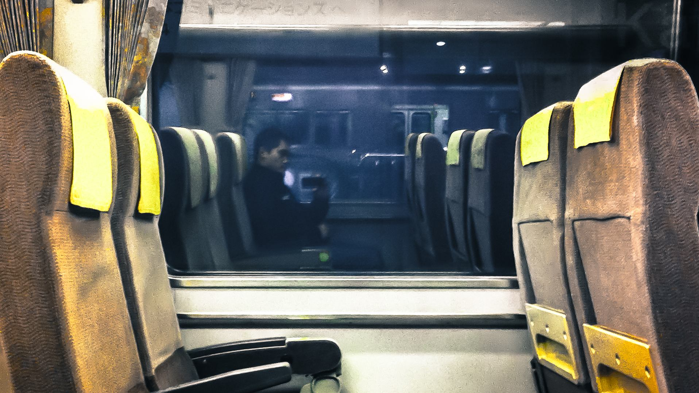
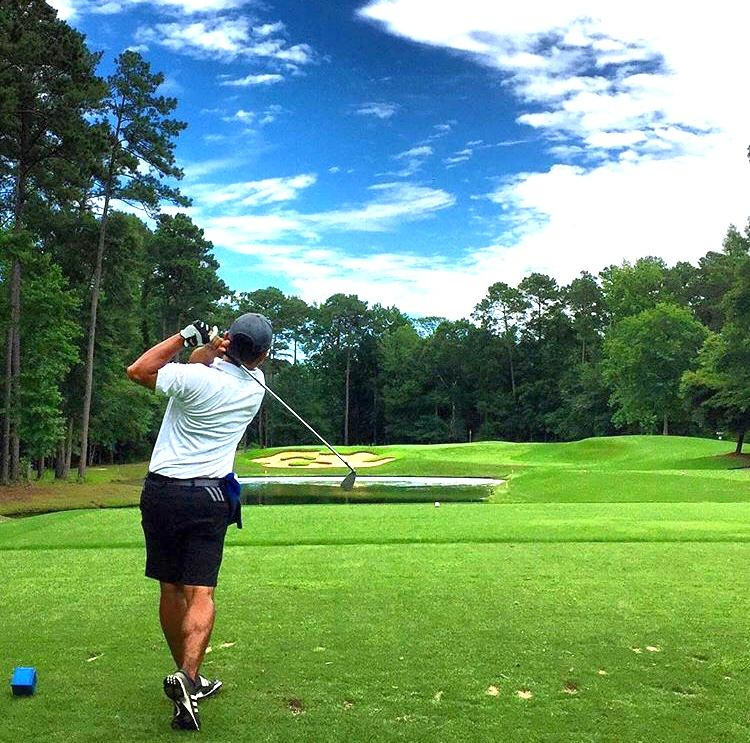
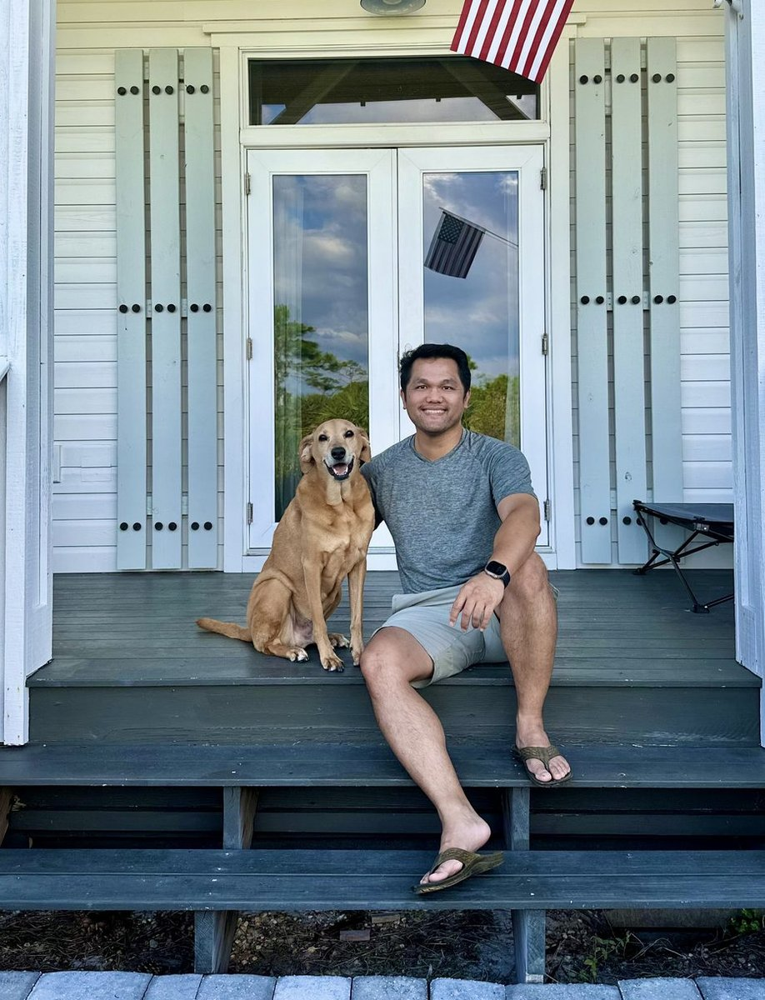
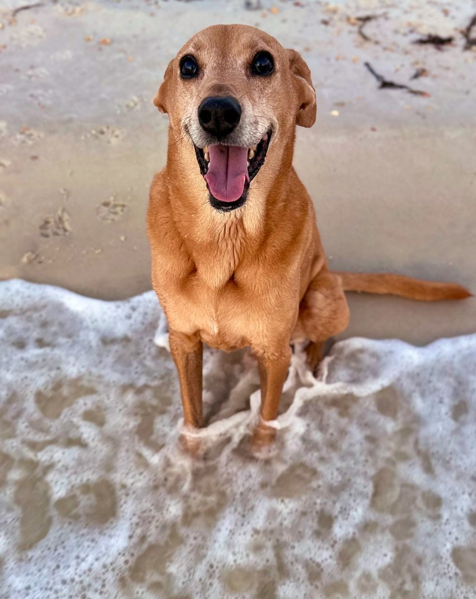

When once you have tasted flight, you will forever walk the earth with your eyes turned skyward.
Leonardo da Vinci · A quote that landed early and stuck
Born in Alabama.
Built elsewhere.
I was born in Opelika, Alabama and grew up in Montgomery before heading to Auburn University to study mechanical engineering. I turned 40 this year, which is a reasonable moment to take stock of how you got somewhere.
My father and his family fled to the United States as refugees during the Vietnam War — arriving with little and building everything from scratch. What they built was J&P Khamken Industries, a machine shop that grew from a rented warehouse into a nationally recognized aerospace and defense manufacturer serving Lockheed Martin, Raytheon, BAE, and General Dynamics. It earned the SBA National Subcontractor of the Year in 2011. That's the context I grew up in — and the standard I've quietly held my own work to ever since.
I spent fifteen years inside large-scale industrial automation before fully committing to my own shop. In June 2025 I went all-in on Khamken Designs LLC — CNC machining and engineering design out of Suwanee, Georgia. The timing is right now because I wasn't ready then.
Outside of work I'm probably on a golf course, fishing somewhere, eating somewhere new, or somewhere in the world I haven't been yet. Photographing all of the above.

Suwanee, Georgia
I didn't start
in the office.
I started at the machine. Growing up around my father's shop meant my education in manufacturing started before any classroom. Through high school and college I worked there part-time — progressing from basic equipment to waterjet to full CNC operation. Before I ever opened a CAD package professionally, I was reading and writing G-code by hand. Not because it was required, but because understanding why a machine moves the way it does makes every design decision that follows make more sense.
That foundation never left. Every tolerance I've called out, every fixturing approach I've chosen, every design I've signed off on — all of it has been filtered through the question a machinist always asks: can this actually be made?
At CRH I spent five years deep in the mechanics of automotive seat frame production — tool and die, welding fixtures, semi-automated assembly stations. I traveled to Mexico and Poland for projects. Teamtechnik opened up a wider world: automated end-of-line test equipment for automotive clients including Tesla, and assembly systems for medical devices. The company later became BBS Automation, where I stepped into the role of mechanical lead on Rivian's R1 and R2 production equipment.
In between I spent a year at a Fanuc robotics integrator in Atlanta, completing five large robotic cell projects across entirely different industries in twelve months. Through all of it, the idea of running my own shop was always there — quiet but persistent. The fully committed version came in 2025, when the timing was finally right.
Formula SAE, IEEE robotics team, autonomous lawnmower senior capstone. Photography started here as a creative outlet. Auburn gave me the degree — the teams gave me the education.
Briefly returned to the family shop post-graduation — by then a nationally recognized aerospace and defense manufacturer.
Tool and die for sheet metal stamping, welding and assembly fixtures, semi-automated stations. Traveled to Michigan, Tennessee, Saltillo Mexico, and Świebodzin Poland.
Started quietly on the side during the later years at CRH — contract design work and 3D printing services. Due to employment workload, had to temporary place on back burner. The idea never went away.
Automated EOLT equipment for automotive and medical device clients — including equipment installed at the Tesla Reno Gigafactory. Relocated to the north Atlanta metro area.
Five large robotic cell projects in one year across food & beverage, foundry, building materials, automotive, and metals. Installations across six states.
Mechanical lead on Rivian R1 and R2 production equipment. Multi-station robotic assembly systems in EV automotive sector.
Relaunched KDLLC with machining operations alongside full-time employment. Deliberately and patiently laying the groundwork.
Fully committed. Relocated operations to Suwanee and brought in CNC machining capability. My father handed the baton back. It came full circle. Design to chips, start to finish.
Eyes turned
skyward.
The travel bug started in the summer of 2004 — a Spanish III class trip that was my first time overseas. Fourteen days, seven cities, one disposable Kodak camera. I came back different in a way that's hard to articulate. Everything that's followed — 21 countries across Europe, Asia, and Oceania — traces back to that trip.
Asia and Oceania have become my favorite region to travel. I've been to Japan multiple times and keep going back. New Zealand in 2014 was the kind of trip that recalibrates what "landscape" means.
Photography started at Auburn as a creative outlet away from engineering coursework. HDR and post-processing work in the early years, cleaner and more natural as I found my eye. I shoot Canon gear and have since the beginning. One photographer I genuinely admire is Trey Ratcliff — the travel photographer behind StuckInCustoms.com and widely recognized as a pioneer of HDR photography.
Golf is one of those love / hate hobbies — frustrating to become decent at but enjoy all the destinations that golf courses can take you and being outside on a beautiful cloudy day.

21 countries and still counting. Asia and Oceania are at the top of the list — Japan particularly. The goal is always somewhere new.

Started at Auburn, still going. Canon gear throughout. Landscapes are the sweet spot — New Zealand and Japan are the work I'm proudest of.

The sport that consistently humbles engineers who think analytical thinking transfers to a physical skill. Still working on it.
Two pursuits with the same underlying logic: patience, location, and knowing what you're looking for. Being a foodie just means the fishing is worth it regardless of what you catch.
AustinThe goodest boy.
I adopted Austin from the Atlanta Humane Society in May 2018 — a four-and-a-half year old lab-ridgeback mix who'd been waiting a while. I'd just come off a long, draining project at work and was running on empty. Austin fixed that. He gave me a reason to leave the office at a reasonable hour, to spend time outside, to pay attention to things that weren't deadlines. He was goofy, patient, and genuinely good at his job of making life feel balanced.
I lost him in September 2025 to cancer. He was eleven years old and handled it with more grace than most people manage anything. The house is quieter now. I'll adopt again — just not yet.


or work together?
Engineering projects, machining inquiries, or just to say hello.